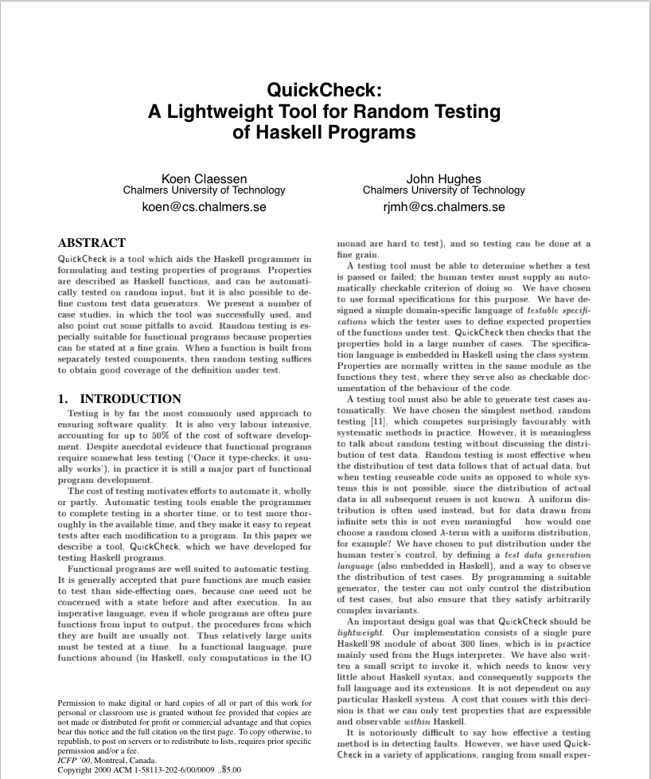

QuickCheck vs. GOOS
Testing for better software
What I was listening to

What we're going to talk about
- TDD/BDD (GOOS)
- QuickCheck
- Where we can use property testing
Caveat - I have no idea what I'm doing


Goos
Growing Object-Oriented Software Guided by Tests

Emphasizes
- Tests first
- Tests for design as well as regression
- Testing outside in based on behaviour (BDD)
- Mock Objects
- End to End (not Edge to Edge)
Example
Lets build an music player
- Post a song id to an endpoint to add it to the queue
- Broadcast this change to all connected clients
Tests
describe "POST #queue" do
it "should add the track to the queue and alert clients of change" do
id = 1337
track = instance_double("Track", :id => id)
expect(Track).to receive(:find).with(id).and_return(track)
expect(Queue).to receive(:add_track).with(track).and_return 1
expect(Broadcast).to receive(:broadcast)
post '/queue', :id => id
end
end
Api
class App < Sinatra::Base
post "/queue" do
@track = Track.find(params[:id])
Queue.add_track(@track)
Broadcast.send('/songs', @track)
end
end
But what about errors
describe "POST #queue" do
it "should add the track to the queue and alert clients of change" do
id = 1337
track = instance_double("Track", :id => id)
expect(Track).to receive(:find).with(id).and_return(track)
expect(Queue).to receive(:add_track).with(track).and_return 1
expect(Broadcast).to receive(:broadcast)
post '/queue', :id => id
end
end
class App < Sinatra::Base
post "/queue" do
@track = Track.find(params[:id])
Queue.add_track(@track)
Broadcast.send('/songs', @track)
end
end
Yay tests!
- Tests only cover the conditions that you set (duh)
- You have to be explicit in your error conditions
- Find errors in staging (or production) and add tests
- (Still better then no tests)
Yay tests!
- Tests only cover the conditions that you set (duh)
- You have to be explicit in your error conditions
- Find errors in staging (or production) and add tests
Enter QuickCheck
QuickCheck
- Developed in 1999/2000
- Written in Haskel
- Widely adopted in hipster FP circles (clojure, scala, erlang)
- Libraries in most languages (Crockford wrote it for JS)
QuickCheck I can't even
- Testing is based on defined properties
- Data is generated in defined ways
- Errors are found dynamically
- Shrinkers find smallest error condition
Properties
A way of saying what this thing should do
Generators
Generate fake data for testing
Shrinkers
Help narrow down failing cases